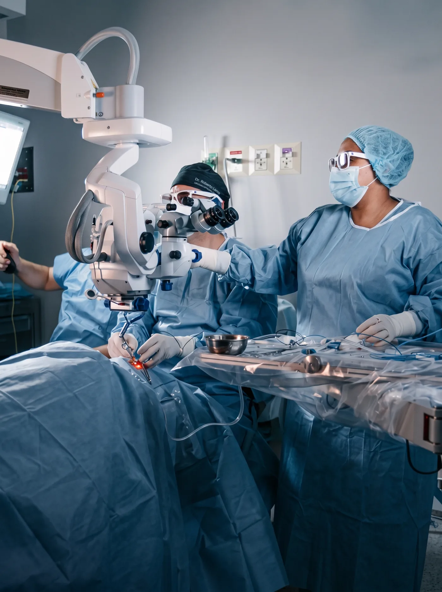
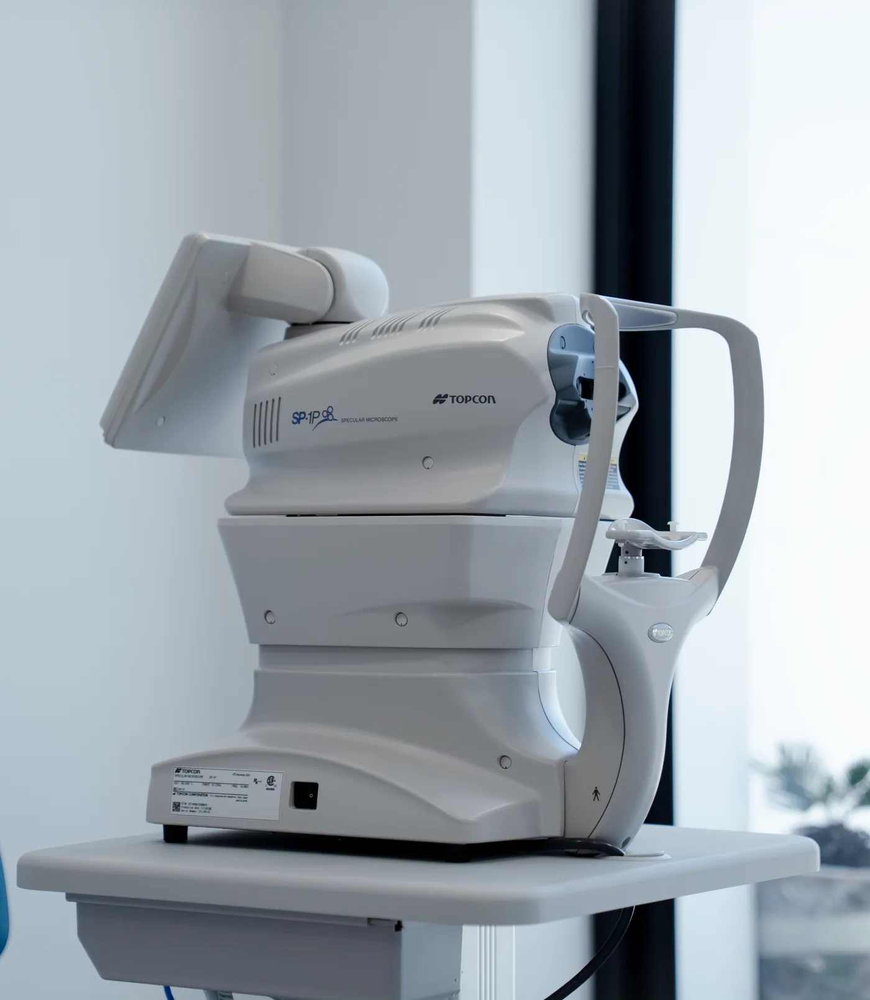
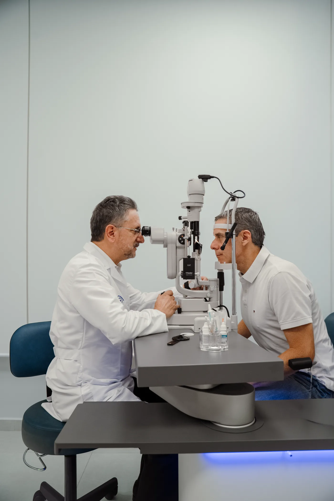
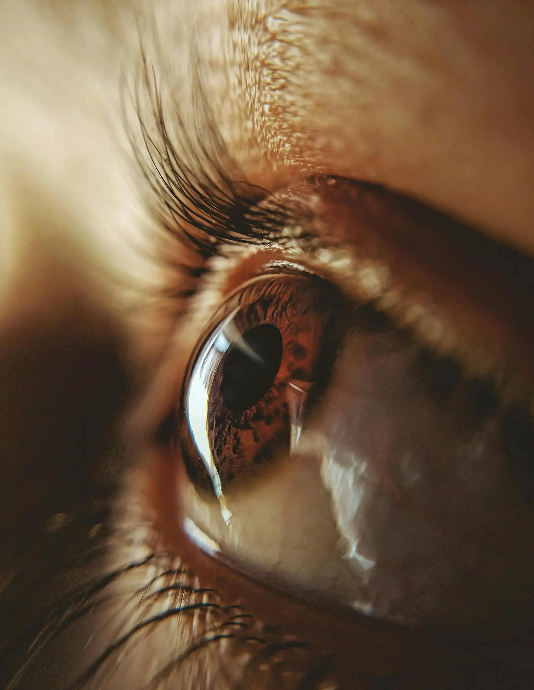
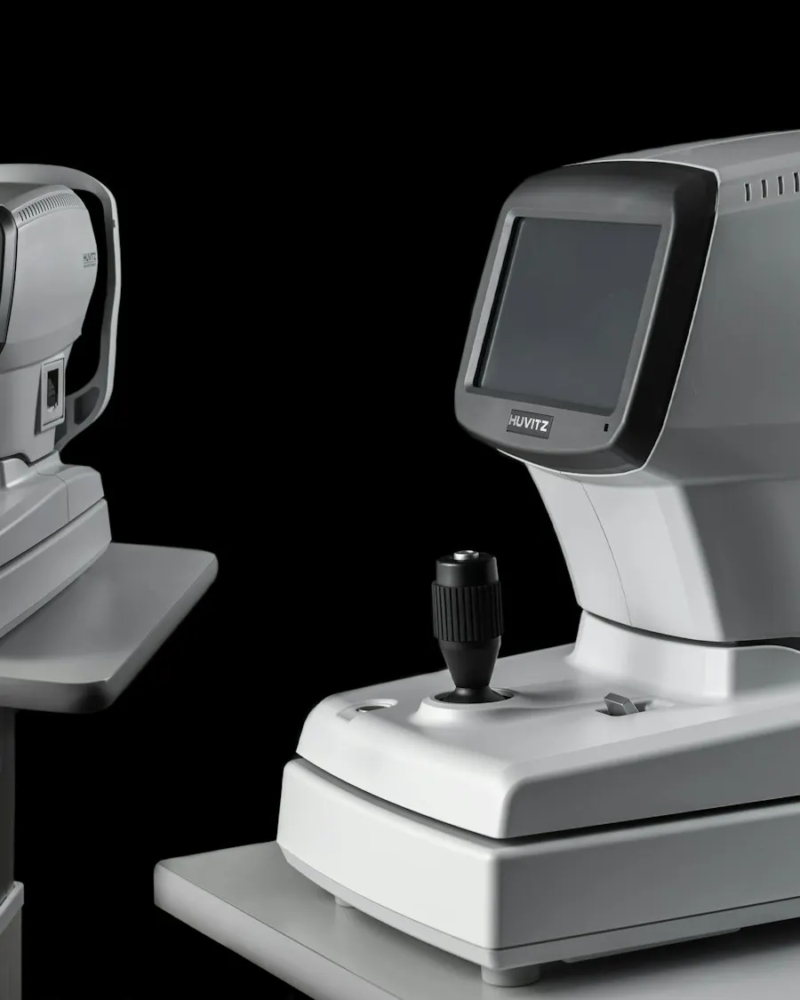

Dr. Marcelo Larco
Pionero de la cirugía de catarata con láser en Quito.
EspecialidadCórnea, catarata y cirugía refractiva
ConócenosTres generaciones de cirujanos oftalmólogos. Tradición médica familiar con diagnóstico y quirófano de última generación.
La clínica está dirigida por sus propios cirujanos: cada diagnóstico y cada cirugía llevan el nombre de quien la opera.
Con el respaldo de marcas líderes en oftalmología como ZEISS, diagnosticamos con precisión y ofrecemos tratamientos seguros y exactos.

01 Procedimientos quirúrgicos con tecnología láser para catarata, córnea, retina y corrección de defectos refractivos. Cirugía ambulatoria, precisa y con recuperación ágil.
02 Diagnóstico de alta precisión con equipos especializados. Estudios complementarios que confirman cada diagnóstico y planifican el tratamiento exacto para cada paciente.
03 Evaluación oftalmológica integral. El punto de partida para detectar a tiempo, dar seguimiento y definir el mejor tratamiento para tu salud visual.Ejemplos de redacción mientras la clínica entrega sus casos: el motivo de consulta, el procedimiento y el resultado.

